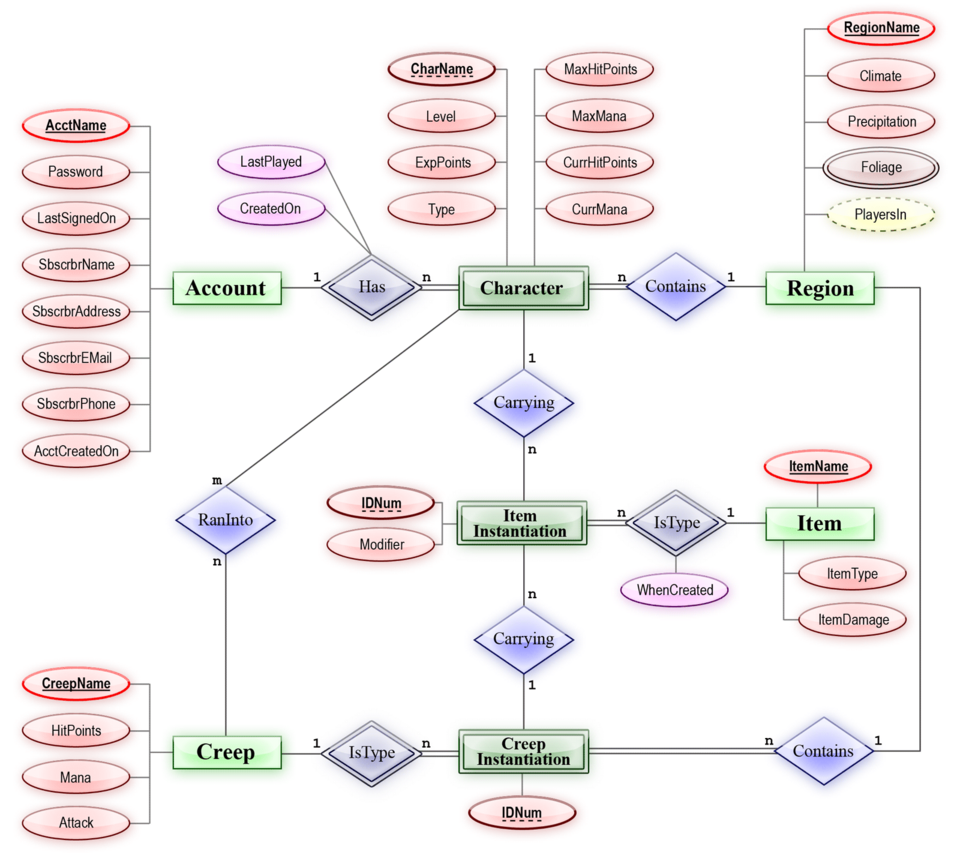

Fundamentos de Banco de Dados
O que é um SGBD? Tipos e Aplicações?
SGBD (Sistema de Gerenciamento de Banco de Dados) gerencia dados. Tipos: Relacional (MySQL), NoSQL (MongoDB). Aplicações: E-commerce, bancos, etc.
Quais os principais bancos de dados?
MySQL, PostgreSQL, Oracle, SQL Server, MongoDB.
O que é um dicionário de dados? Quais os tipos de dados de um banco de dados?
Dicionário descreve estrutura. Tipos: Inteiro, varchar, date, etc.
O que é uma modelagem de banco de dados? E o modelo DER? MER?
Modelagem define estrutura. DER: Diagrama Entidade-Relacionamento. MER: Modelo Entidade-Relacionamento.
Explique um exemplo de um diagrama DER (foto)?
DER mostra entidades e relacionamentos. Ex: Cliente → Compra → Produto.
Explique um exemplo de um diagrama MER (foto)?
O conceito do DER (uma lista de entidades, relacionamentos e atributos) antes de ser criado o diagrama para visualização.